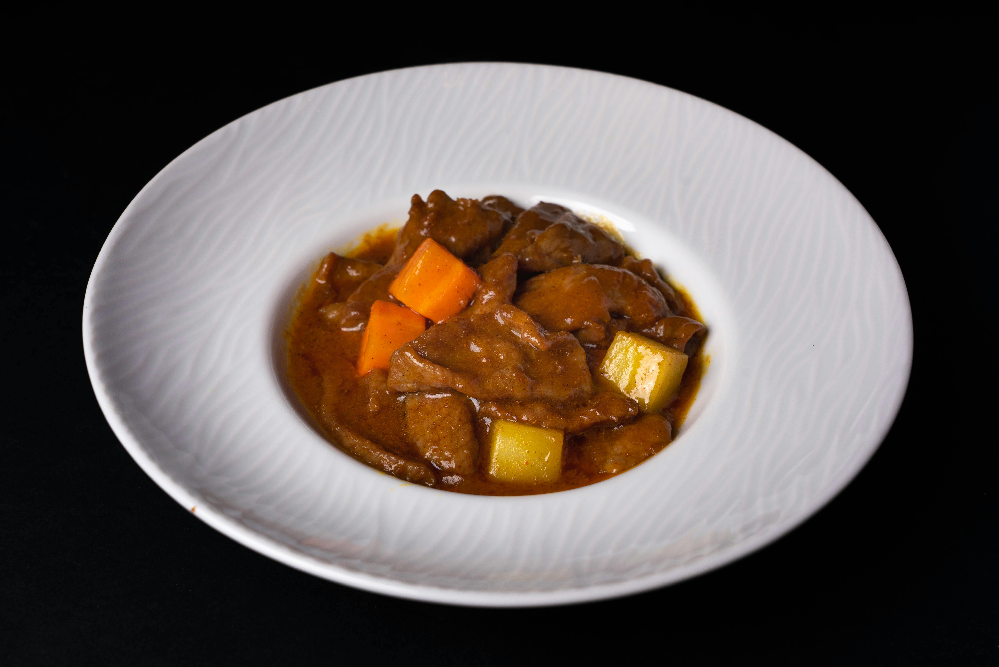

Easy Slow Cooker Savory Pot Roast

Description
A simple slow cooker meal for busy days. Recipe owned by Campbell's.
Original recipe page found here.
Ingredients
- 1 can (10.5 oz) Campbell's Condensed Cream of Mushroom Soup
- 1 envelope (about 1 oz) dry onion recipe soup and dip mix
- 6 medium red potatoes, cut in half
- 3 cups baby-cut carrots
- 3 lbs boneless beef chuck roast
Steps
- Stir the mushroom soup, soup mix, potatoes, and carrots in a 4.5 quart slow cooker.
Season the beef with salt and pepper. Add the beef to the cooker and turn to coat.
- Cover and cook on LOW for 6-7 hours or until beef is fork-tender.
Home